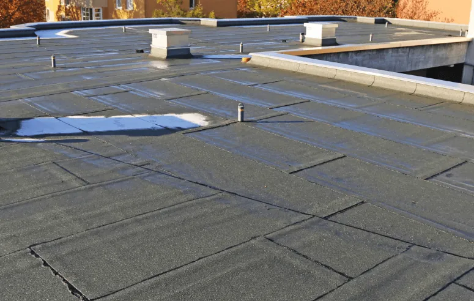
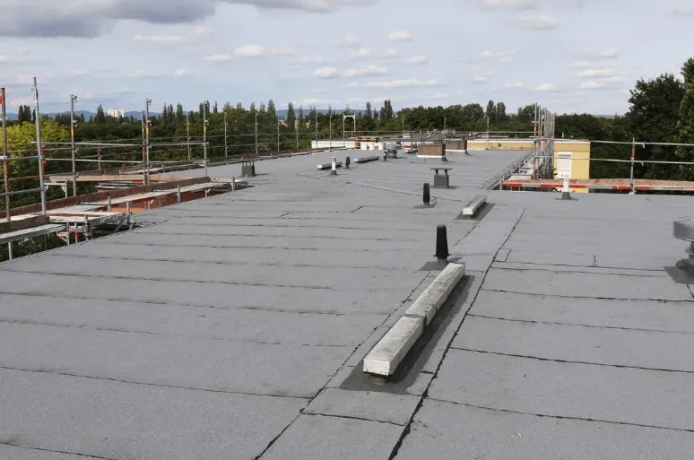

Flat roofs often develop defects that can lead to leaks, structural damage, and repairs. The most common issue is ponding water, caused by poor drainage or roof settling. EZ Roofing in Cabot, Arkansas, specializes in flat roof repair for homeowners, business owners, and property managers, helping protect your property and extend the lifespan of your roof.
Understanding Flat Roof Defects and Their Impact
Flat roofs are a practical solution for commercial and residential buildings, offering easy access and a modern aesthetic. However, their low slope makes them more vulnerable to certain problems compared to pitched roofs. Even minor defects can shorten the roof’s lifespan, cause interior leaks, and increase repair costs.
Some common flat roof defects include:
- Ponding Water – Standing water that doesn’t drain can slowly weaken the roof membrane.
- Membrane Cracks – Sun exposure, temperature fluctuations, and foot traffic can cause cracks that allow water penetration.
- Seam Failures – Improper installation or aging materials can lead to separation at seams.
- Blisters and Bubbles – Air or moisture trapped beneath the membrane can create raised areas.
- Flashing Deterioration – Edges and joints may degrade over time, leaving gaps for leaks.
Recognizing these defects early is key for homeowners, business owners, and property managers in Cabot, Arkansas, to avoid expensive roof repair.
Why Ponding Water Is the Most Frequent Issue
Causes of Ponding Water
Ponding water forms when water accumulates on a flat roof instead of draining properly. Typical causes include:
- Clogged Drains or Scuppers – Leaves, debris, or dirt can block water flow.
- Structural Settling – Over time, the roof deck may sag or shift.
- Design Flaws – Inadequate slope or poor drainage design during installation.
Risks of Ignoring Ponding Water
Standing water on a flat roof is more than just an eyesore. Ignoring it can lead to:
- Membrane Deterioration – Constant water exposure weakens roofing materials.
- Interior Leaks – Water can seep into ceilings and walls, causing damage and mold growth.
- Structural Strain – Water adds weight, potentially damaging beams or supports.
- Faster Aging – Ponding accelerates wear, reducing overall roof lifespan.
Professional flat roof repair companies like EZ Roofing can install additional drains, repair slopes, or replace damaged membrane areas to solve ponding water problems effectively.
Other Frequent Flat Roof Problems

Membrane Cracks
Cracks in the roofing membrane are common in older or heavily used flat roofs. These cracks can allow water to penetrate, leading to interior damage and mold growth.
Signs to Watch For:
- Blisters, splits, or visible tears in the membrane
- Water stains on ceilings or interior walls
- Soft spots underfoot on the roof surface
Addressing cracks early with professional flat roof repair can prevent larger leaks and more expensive repairs.
Seam Failures
Flat roofs are usually made of large sheets of roofing material joined together. Seams may fail due to:
- Aging adhesives or fasteners
- Temperature fluctuations causing expansion and contraction
- Poor installation during the original roofing project
Professional roofing contractors can inspect and repair seam failures, using techniques such as seam reinforcement, patching, or full membrane replacement.
Blisters and Bubbles
Blisters occur when air or moisture becomes trapped under the roof membrane. While small blisters may not cause immediate issues, they can burst over time, leading to leaks.
Preventative Measures:
- Schedule routine inspections
- Repair blisters before they worsen
- Maintain proper roof ventilation to reduce trapped moisture
How to Know When It’s Time to Call a Professional
Regular inspections are key to maintaining a flat roof. You should consider professional flat roof repair in Cabot if you notice:
- Persistent puddles after rainfall
- Visible cracks, splits, or blisters on the membrane
- Leaks or stains inside the building
- Loose or damaged flashing
- Sagging or uneven areas on the roof
Professional roof repair ensures that issues are addressed correctly, avoiding temporary fixes that can lead to bigger problems. A roofing company like EZ Roofing provides expertise, proper materials, and efficient service to protect your property.
Preventative Maintenance Tips

While professional flat roof repair is essential for serious defects, regular maintenance can extend your roof’s life and reduce the need for expensive repairs:
Daily to Monthly Maintenance:
- Remove debris such as leaves, branches, or dirt from the roof surface
- Check drains, scuppers, and gutters to ensure water flows freely
Quarterly to Annual Maintenance:
- Inspect seams and membrane for cracks or deterioration
- Trim nearby tree branches that could cause damage
- Schedule professional inspections to identify hidden problems early
Why Maintenance Matters:
Routine maintenance can reduce repair costs, prevent leaks, and keep your flat roof performing efficiently.
What to Expect During a Flat Roof Repair Visit
When EZ Roofing performs flat roof repair in Cabot, Arkansas, the process is structured and thorough:
- Comprehensive Inspection – The team identifies defects, assesses drainage, and examines the membrane condition.
- Repair Assessment – Recommendations are made based on severity, including cost estimates.
- Professional Repair – Techniques may include patching, seam reinforcement, membrane replacement, or drainage improvement.
- Final Inspection – After repairs, the roof is re-evaluated to ensure long-term performance.
- Maintenance Advice – Customers receive tips to help extend the roof’s life.
This approach ensures repairs are effective and durable, protecting your property investment.
The Benefits of Addressing Flat Roof Defects Early
- Avoid Expensive Repairs – Fixing small issues prevents major damage.
- Prevent Interior Damage – Protect walls, ceilings, and insulation from leaks.
- Increase Roof Longevity – Proper maintenance and repairs extend service life.
- Protect Property Value – Well-maintained roofs improve building aesthetics and resale value.
Ignoring defects can result in expensive emergency repairs and structural issues, making early intervention the smarter choice.
Final Thoughts
Ponding water is the most common defect in flat roofs, but cracks, seam failures, and blisters can also cause serious issues. Early detection, routine maintenance, and professional flat roof repair are essential to protecting your property. EZ Roofing in Cabot has the expertise to evaluate, repair, and maintain flat roofs for homeowners, business owners, and property managers. Contact our team today to schedule a free inspection and keep your roof in optimal condition.